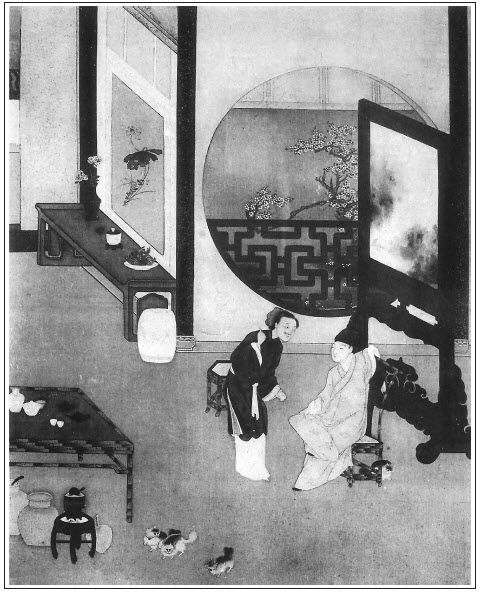

張回此回前一段，是金蓮文字。知縣差出以後一段，是武大、武二文字。挑簾以後，是西門慶與王婆文字。然則金蓮文字中，又有武二文字也。
金蓮、武二文字中，妙在親密，親密的沒理殺人。武二、武大文字中，妙在淒慘，淒慘的傷心殺人。王婆、西門慶文字中，妙在扯淡，扯淡的好看殺人。此等文字，亦難將其妙處在口中說出。但願看官看金蓮、武二的文字時，將身即做金蓮，想至等武二來，如何用言語去勾引他，方得上道兒也。思之不得，用筆描之亦不得，然後看《金瓶梅》如何寫金蓮處，方知作者無一語不神妙難言。至看武大、武二文字，與王婆、西門慶文字，皆當作如是觀。然後作者之心血乃出，然後乃不負作者的心血。
金蓮調武二處，乃一味熱急。雖寫其幾番閒話，又幾番夾入吃酒，然而總是一味急躁，不能寧耐處。
西門對王婆處，卻一味涎臉。然卻見面即問誰家雌兒，次日見面即雲要買炊餅，又口中一刻不放鬆也。王婆勾西門處，卻一味閒扯，然卻步步引入來，是馬泊六引誘人入局處。
《水滸》中，此回文字，處處描金蓮，卻處處是武二，意在武二故也。《金瓶》內此回文字，處處寫武二，卻處處寫金蓮，意在金蓮故也。文字用意之妙，自可想見。
寫武二、武大分手，只平平數語，何以便使我再不敢讀，再忍不住哭也？文字至此，真化工矣！
篇內寫叉簾，凡先用十幾個「簾」字一路影來，而第一個「簾」字，乃在武鬆口中說出。夫先寫簾子引入，已奇絕矣，乃偏於武鬆口中逗出第一個「簾」字，真奇橫殺人矣！
上回內雲金蓮穿一件「扣身衫兒」，將金蓮性情形影魂魄，一齊描出。此回內云「毛青布大袖衫兒」，描寫武大的老婆，又活跳出來。
看其寫簾下勾情處，正是金蓮、西門四目相射處。乃忽入王婆，且即從王婆眼中照入唱喏。文情固爾緊湊的妙，而情景亦且旁擊的活動也。
簾下勾情，必大書金蓮，總見金蓮之惡不可勝言。猶雲你若無心，雖百西門奈之何哉？凡壞事者，大抵皆是婦人心邪。強而成和，吾不信也。
題云「俏潘娘簾下勾情」，則勾情乃本文正文也，乃入手先寫武二。夫勾引武二，亦勾情也。然必勾西門，方是簾下勾情。夫未勾西門，先勾武二。有心勾者，反不受勾；無心勾者，反一個眼色即成五百年風流孽冤。天下事固有如此！而金蓮安心勾情，故此不著而彼著也。故勾武二，又簾下勾情一影。
王婆本意招攬西門，以作合山自任，而不肯輕輕說出。西門本意兜攬王婆，以作合山望之，而又不便直直說出。兩人是一樣心事，一樣說不出，一樣放不下，一樣技癢難熬，故斷斷續續有這許多白話也。
試想捉筆時，寫簾下一遇，既接入王婆，則即當寫西門到茶房中，許以金帛，便央王婆作合，王婆即為承認畫計。文章中固無此草率文字。即西門入王婆茶房內，開口便講，其索然無味為何如也！則說技之妙文，固文字頓錯處，實亦兩人一時不得不然之情理也。
篇內知縣，本為欲寫武二出門，故寫一知縣，卻又因知縣要寄禮物，乃又寫一朱勉。文字有十成補足法，此十成補足之法也。不知又為後文衛千戶本官伏脈。
作者每於伏一線時，每恐為人看出，必用一筆遮蓋之。一部《金瓶》，皆是如此。如這回內，寫婦人和他鬧了幾場，落後慣了，自此婦人約莫武大歸來時分，先自去收簾子，關上大門。此為後落簾打西門之由，所謂針線也。又云「武大心裡自也暗喜，尋思道：『恁的卻不好。』」是其用遮蓋筆墨之筆，恐人看出也。於此等處，須要看他學他。故做文如蓋造房屋，要使樑柱筍眼，都合得無一縫可見；而讀人的文字，卻要如拆房屋，使某梁某柱的筍，皆一一散開在我眼中也。
此後數回，大約同《水滸》文字，作者不嫌其同者，要見欲做此人，必須如此方妥方妙，少變更即不是矣。作者止欲要敘金蓮入西門慶家，何妨隨手只如此寫去。又見文字是件公事，不因那一人做出此情理，便不許此一人又做出此情理也。故我批時，亦只照本文的神理、段落、章法，隨我的眼力批去，即有亦與批《水滸》者之批相同者，亦不敢避。蓋作者既不避嫌，予何得強扭作者之文，予自批《金瓶》之文。謂兩同心可，謂各有見亦可；謂我同他可，謂他同我亦可；謂其批為本不可易可，謂其原文本不可異批亦無不可。
看西門慶問「茶錢多少」，問「你兒子王潮跟誰出去」，又云「與我做個媒也好」，又云「回頭人兒也好」，又云「乾娘吃了茶」，又云「間壁賣的甚麼」，又云「他家做的好炊餅，我要問他買四五十個拿家去」，都是口裡說的是這邊，心裡說的是那邊，心裡要說說不出，口裡不說忍不住。有心事有求於人，對著這人，便不覺醜態畢露，底裡皆見。而王婆子則一味呆裡撒奸，收來放去，又自報腳色，又佯推不睬，煞是好看殺人。至一塊銀子到手，王婆便先說你有心事，而西門心事，一竟敢於吐露，王婆且先為一口道出。寫得「色」字固是怕人，寫得「財」字更是利害，真追魂取影之筆也。讀《金瓶》後，而尚復敢云「自能作小說」，與讀《金瓶》後，而尚不能自作小說，皆未嘗讀《金瓶梅》者也。
頭一日，點梅湯，點和合湯。第二日，偏不即出問茶，偏等他自己要茶，偏又濃濃點兩盞茶。瑣瑣處，皆是異樣紋錦，千萬休匆匆看過。
王婆自敘雜趁處，皆小戶人家此等婦人三四十歲後必然之事。甚矣，六婆之不可令其入內也！
書內寫媒婆，馬泊六，非一人，獨於王婆寫得如鬼如蜮，利害怕人。我每不耐看他寫王婆處也。
寫王婆的說話，卻句句是老虔婆聲口，作老頭子不得，作小媳婦亦不得，故妙。
詞曰：
芙蓉面，冰雪肌，生來娉婷年已笄。裊裊倚門餘。梅花半含蕊，似開還閉。初見簾邊，羞澀還留住；繡旁嫵媚。張夾金蓮。再過樓頭，款接多歡喜。張夾西門慶。行也宜，立也宜，坐也宜，偎傍更相宜。
──右調《孝順歌》

話說當日武松來到縣前客店內，收拾行李鋪蓋，交土兵挑了，引到哥家。那婦人見了，強如拾得金寶一般歡喜，繡旁金寶想是硬的。張夾白描一句。旋打掃一間房與武松安頓停當。武松吩咐土兵回去，當晚就在哥家歇宿。次日早起，張夾武二早起也，寫精細人入化。婦人也慌忙起來，張夾寫婦人亦入化。與他燒湯淨面。張夾不使迎兒，妙。武松梳洗裹幘，出門去縣裡畫卯。婦人道：「叔叔張夾一。畫了卯，早些來家吃早飯，休去別處吃了。」武松應的去了。到縣裡畫卯已畢，伺候了一早晨，回到家，那婦人又早齊齊整整安排下飯。張夾不使迎兒，妙。三口兒同吃了飯，婦人雙手便捧一杯茶來，遞與武松。武松道：「交嫂嫂生受，武松寢食不安，明日撥個土兵來使喚。」那婦人連聲叫道：「叔叔張夾二。卻怎生這般計較！自家骨肉，又不服事了別人。繡旁語語俱有味繡眉語云：「三寸入肉，強如骨肉。」雖然有這小丫頭迎兒，奴家見他拿東拿西，蹀里蹀斜，也不靠他。張夾映出上二節。妙甚。就是撥了土兵來，那廝上鍋上灶不乾淨，奴眼裡也看不上這等人。」武松道：「恁的卻生受嫂嫂了。」張夾一段小文字，寫武大混沌，武二天性，婦人慇勤俱盡。有詩為證：
武松儀表豈風流，嫂嫂淫心不可收。
籠絡歸來家裡住，相思常自看衾裯。張旁妙，可想。
話休絮煩。自從武松搬來哥家裡住，取些銀子出來與武大，買餅散茶果，請那兩邊鄰舍。張夾又補鄰舍。都斗分子來與武松人情。武大又安排了回席，不在話下。過了數日，武松取出一疋彩色段子與嫂嫂做衣服。那婦人堆下笑來，便道：「叔叔張夾三。如何使得！既然賜與奴家，不敢推辭。」只得接了，道個萬福。自此武松只在哥家宿歇。張夾至此一束，不另發一段文字。武大依前上街挑賣炊餅。武松每日自去縣裡承差應事，不論歸遲歸早，婦人頓茶頓飯，歡天喜地伏侍武松，武松倒覺過意不去。那婦人時常把些言語來撥他，武松是個硬心的直漢。
有話即長，無話即短，不覺過了一月有餘，看看十一月天氣，連日朔風緊起，只見四下彤雲密佈，又早紛紛揚揚飛下一天瑞雪來。張夾後月娘掃雪，亦是十一月，則知掃雪一回，明月娘隱惡與金蓮同也。好大雪！怎見得？但見：
萬里彤雲密佈，空中祥瑞飄簾。瓊花片片舞前簷。剡溪當此際，濡滯子猷船。頃刻樓台都壓倒，江山銀色相連。飛鹽撒粉漫連天。當時呂蒙正，窯內歎無錢。
當日這雪下到一更時分，卻早銀妝世界，玉碾乾坤。張夾一篇雪賦。次日武鬆去縣裡畫卯，直到日中未歸。武大被婦人早趕出去做買賣，央及間壁王婆買了些酒肉，繡旁此處恐用王婆不著。張夾又點王婆。去武松房裡簇了一盆炭火。張夾看官記著，是武松房裡。心裡自想道：「我今日著實撩鬥他一撩鬥，不怕他不動情。」那婦人獨自冷冷清清立在簾兒下，張夾又點簾子。望見武松正在雪裡，踏著那亂瓊碎玉歸來。婦人推起簾子，張夾簾子二。迎著笑道：「叔叔張夾四。寒冷？」武松道：「感謝嫂嫂掛心。」入得門來，便把氈笠兒除將下來。那婦人將手去接，張夾白描處。武松道：「不勞嫂嫂生受。」自把雪來拂了，繡旁真正道學。掛在壁子上。隨即解了纏帶，脫了身上鸚哥綠紵絲衲襖，入房內。那婦人便道：「奴等了一早晨，叔叔張夾五。怎的不歸來吃早飯？」武松道：「早間有一相識請我吃飯，卻才又有作杯，我不耐煩，一直走到家來。」婦人道：「既恁的，請叔叔張夾六。向火。」武松道：「正好。」便脫了油靴，換了一雙襪子，穿了暖鞋，掇條凳子，自近火盆邊坐地。繡旁此人意致太冷。那婦人早令迎兒把前門上了閂，後門也關了。張夾後門出現，一。卻搬些煮熟菜蔬入房裡來，擺在桌子上。武松問道：「哥哥那裡去了？」婦人道：「你哥哥出去買賣未回，我和叔叔張夾七。自吃三杯。」張夾「叔叔」上，忽加「我和」二字，便寫得不堪。武松道：「一發等哥來家吃也不遲。」婦人道：「那裡等的他！」說猶未了，只見迎兒小女早暖了一注酒來。武松道：「又教嫂嫂費心。」婦人也掇一條凳子，近火邊坐了。桌上擺著杯盤，婦人拿盞酒擎在手裡，看著武松道：「叔叔張夾八。滿飲此杯。」武松接過酒去，一飲而盡。那婦人又篩一杯酒來，說道：「天氣寒冷，叔叔張夾九。飲過成雙的盞兒。」繡眉多是虛挑冷逗。武松道：「嫂嫂自請。」接來又一飲而盡。武松卻篩一杯酒，遞與婦人。婦人接過酒來呷了，卻拿注子再斟酒放在武松面前。那婦人一徑將酥胸微露，雲鬟半嚲，繡旁描出動人處，令人魂消也。臉上堆下笑來，說道：「我聽得人說，叔叔張夾十。在縣前街上養著個唱的，有這話麼？」繡眉好入境。武松道：「嫂嫂休聽別人胡說，我武二從來不是這等人。」繡夾一口回絕。婦人道：「我不信！只怕叔叔張夾十一。口頭不似心頭。」武松道：「嫂嫂不信時，只問哥哥就是了。」婦人道：「啊呀，張夾如聞其聲。你休說他，那裡曉得甚麼？繡旁可憐。如在醉生夢死一般！繡旁實情。他若知道時，不賣炊餅了。張夾一逼。叔叔張夾十三。（原批無序十二。）且請杯。」張夾又漾開去。連篩了三四杯飲過。那婦人也有三杯酒落肚，哄動春心，那裡按納得住。欲心如火，只把閒話來說。武松也知了八九分，自己只把頭來低了，卻不來兜攬。婦人起身去燙酒。武松自在房內卻拿火莇簇火。繡旁道學先生此時何不去了？婦人良久暖了一注子酒來，到房裡，一隻手拿著注子，一隻手便去武鬆肩上只一捏，說道：「叔叔張夾十四。只穿這些衣裳，不寒冷麼？」武松已有五七分不自在，也不理他。繡旁倒好做作！張夾上雲八九分知了，此雲五七分不自在。從八九分知，變出五七分不自在來。婦人見他不應，匹手就來奪火莇，口裡道：「叔叔張夾十五。你不會簇火，我與你撥火。只要一似火盆來熱便好。」武松有八九分焦燥，繡旁此時眼也花了。張夾又從五七分不自在，變到八九分焦躁。只不做聲。這婦人也不看武松焦燥，便丟下火莇，卻篩一杯酒來，自呷了一口，剩下半盞酒，看著武松道：「你若有心，吃我這半盞兒殘酒。」張夾忽下一「你」字，換去「叔叔」二字。妙。武松匹手奪過來，繡眉忒魯莽。潑在地下說道：「嫂嫂不要恁的不識羞恥！」繡旁掃興。把手只一推，爭些兒把婦人推了一交。繡旁粗極。武松睜起眼來說道：張夾白描武二。「武二是個頂天立地噙齒戴發的男子漢，不是那等敗壞風俗傷人倫的豬狗！繡眉如此人世上卻無，吾正怪其不近人情。張夾不謂此書內，有這樣一個男人。嫂嫂休要這般不識羞恥，為此等的勾當，倘有風吹草動，我武二眼裡認的是嫂嫂，拳頭卻不認的是嫂嫂！」繡旁打虎手段，幾乎出來。婦人吃他幾句搶得通紅了面皮，便叫迎兒張旁便叫迎兒。妙。收拾了碟盞傢伙，繡旁殺風景。口裡說道：「我自作耍子，不直得便當真起來。好不識人敬！」繡旁無聊之極思與。收了傢伙，自往廚下去了。正是：
落花有意隨流水，流水無情戀落花。
這婦人見勾搭武松不動，反被他搶白了一場。武松自在房中氣忿忿，自己尋思。天色卻是申牌時分，武大挑著擔兒，大雪裡歸來。推門進來，放下擔兒，進的裡間，見婦人一雙眼哭的紅紅的，便問道：「你和誰鬧來？」婦人道：「都是你這不爭氣的，交外人來欺負我。」張夾忽將「外人」二字換去「叔叔」，妙。武大道：「誰敢來欺負你？」婦人道：「情知是誰？爭奈武二那廝。張夾忽將「那廝」換「外人」。妙。我見他大雪裡歸來，好意安排些酒飯與他吃，他見前後沒人，便把言語來調戲我。便是迎兒眼見，張夾好伶俐證見。我不賴他。」武大道：「我兄弟不是這等人，從來老實。休要高聲，吃鄰舍聽見笑話。」繡眉能信心兄弟而不為妻言所惑，世人如武大者正少。張夾武大聖人，武二值得拚死。武大撇了婦人，便來武二房裡叫道：「二哥，你不曾吃點心？我和你吃些個。」武松只不做聲，尋思了半晌，一面出大門。
武大叫道：「二哥，你那裡去？」也不答應，一直只顧去了。武大回到房內，問婦人道：「我叫他又不應，只顧望縣裡那條路去了。正不知怎的了？」婦人罵道：「賊餛飩蟲！有甚難見處？那廝羞了，沒臉兒見你，繡旁虧你有臉見他。走了出去。我猜他一定叫人來搬行李，不要在這裡住。卻不道你留他？」武大道：「他搬了去，須吃別人笑話。」張旁刺人心骨。婦人罵道：「混沌魍魎，他來調戲我，到不吃別人笑話！你要便自和他過去，我卻做不的這樣人！你與了我一紙休書，你自留他便了。」武大那裡敢再開口。被這婦人倒數罵了一頓。正在家兩口兒絮聒，只見武松引了個土兵，拿著條扁擔，逕來房內收拾行李，便出門。武大走出來，叫道：「二哥，做甚麼便搬了去？」武松道：「哥哥不要問，說起來裝你的幌子，只由我自去便了。」武大那裡再敢問備細，由武松搬了出去。那婦人在裡面喃喃吶吶罵道：「卻也好，只道是親難轉債，人不知道一個兄弟做了都頭，怎的養活了哥嫂，卻不知反來咬嚼人！繡眉既不養活，又不殺癢，直是可恨。正是花木瓜空好看。搬了去，倒謝天地，且得冤家離眼睛。」繡旁省得動火，倒好，倒好。張夾臨了乃丟去無數名色，獨以「冤家」結之，則今後真是個冤家了也。武大見老婆這般言語，不知怎的了，心中反是放不下。自從武松搬去縣前客店宿歇，武大自依前上街賣炊餅。本待要去縣前尋兄弟說話，卻被這婦人千叮萬囑，吩咐交不要去兜攬他，因此武大不敢去尋武松。張旁自是作者省筆，非關武大懼內。
說這武松自從搬離哥家，撚指不覺雪晴，過了十數日光景。卻說本縣知縣自從到任以來，卻得二年有餘，轉得許多金銀，繡旁第一著。要使一心腹人送上東京親眷處收寄，三年任滿朝覲，打點上司。一來卻怕路上小人，須得一個有力量的人去方好，猛可想起都頭武松，須得此人方了得此事。當日就喚武松到衙內商議道：「我有個親戚在東京城內做官，姓朱名勉，見做殿前太尉之職，要送一擔禮物，捎封書去問安。只恐途中不好行，若得你去方可。你休推辭辛苦，回來我自重賞。」武松應道：「小人得蒙恩相抬舉，安敢推辭！既蒙差遣，只此便去。」知縣大喜，賞了武松三杯酒，十兩路費。不在話下。
且說武松領了知縣的言語，出的縣門來，到下處，叫了土兵，卻來街上買了一瓶酒並菜蔬之類，逕到武大家。武大卻街上回來，見武松在門前坐地，張旁精細之極，等大郎多時也。交土兵去廚下安排。那婦人餘情不斷，見武松把將酒食來，心中自思：「莫不這廝思想我了？
不然卻又回來怎的？到日後我且慢慢問他。」婦人便上樓去重勻粉面，再整雲鬟，換了些顏色衣服，來到門前迎接武松。婦人拜道：「叔叔，不知怎的錯見了，好幾日並不上門，叫奴心裡沒理會處。今日再喜得叔叔來家。沒事壞鈔做甚麼？」武松道：「武二有句話，特來要與哥哥說知。」張夾不題嫂嫂。妙。婦人道：「既如此，請樓上坐。」三個人來到樓上，武松讓哥嫂上首坐了，他便掇杌子打橫。土兵擺上酒，並嗄飯一齊拿上來。武松勸哥嫂吃。婦人便把眼來睃武松，武松只顧吃酒。張夾便不低頭了。寫英雄人無心處，便是那樣，有事處，便稜然圭角欲露。妙絕。酒至數巡，武松問迎兒討副勸杯，叫土兵篩一杯酒拿在手裡，看著武大道：「大哥在上，武二今日蒙知縣相公差往東京幹事，明日便要起程，多是兩三個月，少是一月便回，有句話特來和你說。你從來為人懦弱，我不在家，恐怕外人來欺負。張夾武松亦云「外人」，然則嫂嫂真外人也。假如你每日賣十扇籠炊餅，你從明日為始，只做五扇籠炊餅出去，每日遲出早歸，不要和人吃酒。歸家便下了簾子，張夾簾子三。早閉門，省了多少是非口舌。若是有人欺負你，不要和他爭執，待我回來，自和他理論。大哥你依我時，滿飲此杯！」武大接了酒道：「兄弟見得是，我都依你說。」張夾我欲哭矣。吃過了一杯，武松再斟第二盞酒，對那婦人說道：「嫂嫂是個精細的人，不必要武松多說。我的哥哥張夾我哭亦不能成聲矣。為人質樸，全靠嫂嫂做主。常言表壯不如裡壯，嫂嫂把得家定，我哥哥煩惱做甚麼！豈不聞古人云：籬牢犬不入。」繡眉如此隱諷，武大置之不聞，真正醉生夢死。那婦人聽了這句話，一點紅從耳邊起，須臾紫漒了面皮，指著武大罵道：「你這個混沌東西。有甚言語在別處說，張旁疑武氏兄弟合謀。來欺負老娘！我是個不帶頭巾的男子漢，叮叮噹噹響的婆娘！拳頭上也立得人，胳膊上走得馬，不是那腲膿血搠不出來鱉！老娘自從嫁了武大，真個螞蟻不敢入屋裡來，甚麼籬笆不牢犬兒鑽得入來？你休胡言亂語，一句句都要下落！丟下一塊瓦磚兒，一個個也要著地！」繡眉有此利嘴，應是打虎對手。武松笑道：「若得嫂嫂做主，最好。只要心口相應。既然如此，我武松都記得嫂嫂說的話了，請過此杯。」那婦人一手推開酒盞，一直跑下樓來，走到在胡梯上發話道：「既是你聰明伶俐，恰不道長嫂為母。我初嫁武大時，不曾聽得有甚小叔，那裡走得來？是親不是親，便要做喬家公。自是老娘晦氣了，偏撞著這許多鳥事！」繡旁只為撞不著鳥，偏有此鳥事。一面哭下樓去了。正是：
苦口良言諫勸多，金蓮懷恨起風波。
自家惶愧難存坐，氣殺英雄小二哥。
那婦人做出許多喬張致來。武大、武松吃了幾杯酒，坐不住，都下的樓來，弟兄灑淚而別。武大道：「兄弟去了，早早回來，和你相見。」張夾痛殺人，是此二語。武松道：「哥哥，你便不做買賣也罷，繡旁武二亦甚尖冷。只在家裡坐的。盤纏，兄弟自差人送與你。」臨行，武松又吩咐道：「哥哥，我的言語休要忘了，張夾痛殺人，又是此二語。在家仔細門戶。」武大道：「理會得了。」武松辭了武大，回到縣前下處，收拾行裝並防身器械。次日領了知縣禮物，金銀駝垛，討了腳程，起身上路，往東京去了，不題。張夾以下放過武二，單講下文。
只說武大自從兄弟武松說了去，整整吃那婆娘罵了三四日。武大忍聲吞氣，由他自罵，只依兄弟言語，每日只做一半炊餅出去，未晚便回來。歇了擔兒，便先去除了簾子，張夾簾子四。關上大門，卻來屋裡坐的。那婦人看了這般，心內焦燥，罵道：「不識時濁物！我倒不曾見，日頭在半天裡便把牢門關了，也吃鄰舍家笑話，說我家怎生禁鬼。聽信你兄弟說，空生著卵鳥嘴，也不怕別人笑恥！」武大道：「由他笑也罷，繡旁是。我兄弟說的是好話，張夾不知何故，我只淚落。省了多少是非。」被婦人啐在臉上道：「呸！濁東西！你是個男子漢，自不做主，卻聽別人調遣！」武大搖手道：「由他，我兄弟說的是金石之語。」原來武鬆去後，武大每日只是晏出早歸，到家便關門。那婦人氣生氣死，和他合了幾場氣。落後鬧慣了，自此婦人約莫武大歸來時分，先自去收簾子，張夾簾子五。關上大門。武大見了，心裡自也暗喜，張夾壞在喜上。尋思道：「恁的卻不好？」有詩為證：
慎事關門並早歸，眼前恩愛隔崔嵬。
春心一點如絲亂，任鎖牢籠總是虛。
白駒過隙，日月如梭，才見梅開臘底，又早天氣回陽。一日，三月春光明媚時分，金蓮打扮光鮮，單等武大出門，就在門前簾下張夾簾子六。站立。約莫將及他歸來時分，便下了簾子，張夾簾子七。自去房內坐的。一日也是合當有事，卻有一個人從簾子下張夾簾子八。走過來。自古沒巧不成話，姻緣合當湊著。婦人正手裡拿著叉竿放簾子，張夾簾子九。忽被一陣風將叉竿刮倒，婦人手擎不牢，不端不正卻打在那人頭上。張夾一路寫簾子，至此方不另費筆墨生出簾子來。婦人便慌忙陪笑，把眼看那人，也有二十五六年紀，生得十分浮浪。頭上戴著纓子帽兒，金玲瓏簪兒，金井玉欄杆圈兒；長腰才，身穿綠羅褶兒；腳下細結底陳橋鞋兒，清水布襪兒；手裡搖著灑金川扇兒，張夾金扇二現，使數日不見的西門。卻又活跳出來。越顯出張生般龐兒，潘安的貌兒。可意的人兒，風風流流從簾子下丟與個眼色兒。張夾金蓮丟眼色也。這個人被叉竿打在頭上，便立住了腳，待要發作時，回過臉來看，卻不想是個美貌妖嬈的婦人。繡旁真出意外。但見他黑鬒鬒賽鴉鴒的鬢兒，翠彎彎的新月的眉兒，香噴噴櫻桃口兒，直隆隆瓊瑤鼻兒，粉濃濃紅艷腮兒，嬌滴滴銀盆臉兒，輕裊裊花朵身兒，玉纖纖蔥枝手兒，一撚撚楊柳腰兒，軟濃濃粉白肚兒，窄星星尖翹腳兒，肉奶奶胸兒，白生生腿兒，更有一件緊揪揪、白鮮鮮、黑裀裀，正不知是甚麼東西。觀不盡這婦人容貌。且看他怎生打扮？但見：
頭上戴著黑油油頭髮䯼髻，一逕裡踅出香雲，周圍小簪兒齊插。斜戴一朵並頭花，排草梳兒後押。難描畫，柳葉眉襯著兩朵桃花。玲瓏墜兒最堪誇，露來酥玉胸無價。毛青布大袖衫兒，又短襯湘裙碾絹紗。繡眉畫出一個佳人。張旁武大家金蓮如畫。
通花汗巾兒袖口兒邊搭剌。香袋兒身邊低掛。抹胸兒重重紐扣香喉下。往下看尖翹翹金蓮小腳，雲頭巧緝山鴉。鞋兒白綾高底，步香塵偏襯登踏。
紅紗膝褲扣鶯花，行坐處風吹裙跨。口兒裡常噴出異香蘭麝，櫻桃口笑臉生花。人見了魂飛魄喪，賣弄殺俏冤家。
那人一見，先自酥了半邊，那怒氣早已鑽入爪窪國去了，變做笑吟吟臉兒。這婦人情知不是，扠手望他深深拜了一拜，說道：「奴家一時被風失手，誤中官人，休怪！」那人一面把手整頭巾，一面把腰曲著地還喏道：「不妨，娘子請方便。」卻被這間壁住的賣茶王婆子看見。繡旁千古奇緣，不意更有奇人作合。張夾插入王婆。緊捷。那婆子笑道：「兀的誰家大官人打這屋簷下過？打的正好！」張夾王婆自說話。那人笑道：「倒是我的不是，一時衝撞，娘子休怪。」張夾那人自向婦人說話，情理一時都盡，眼中不見王婆。妙。婦人答道：「官人不要見責。」那人又笑著大大地唱個喏，回應道：「小人不敢。」那一雙積年招花惹草，慣覷風情的賊眼，不離這婦人身上，繡眉傳神在阿堵中。臨去也回頭了七八回，張夾一路純是白描。方一直搖搖擺擺遮著扇兒去了。
風日晴和漫出遊，偶從簾下識嬌羞。
只因臨去秋波轉，惹起春心不自由。
當時婦人見了那人生的風流浮浪，語言甜淨，更加幾分留戀：「倒不知此人姓甚名誰，何處居住。他若沒我情意時，臨去也不回頭七八遍了。」繡旁慧心默照。張夾一筆兩用法。卻在簾子下眼巴巴的看不見那人，方才收了簾子張夾簾子十一。（原批無序十。），關上大門，歸房去了。張夾數語完「勾情」題面。
看官聽說，這人你道是誰？卻原來正是那嘲風弄月的班頭，拾翠尋香的元帥，開生藥鋪複姓西門單諱一個慶字的西門大官人便是。張夾一句接入無痕。只因他第三房妾卓二姐死了，發送了當，張夾已完一案。心中不樂，出來街上行走，要尋應伯爵到那裡去散心耍子。卻從這武大門前經過，不想撞了這一下子在頭上。卻說這西門大官人自從簾子下見了那婦人一面，到家尋思道：「好一個雌兒，怎能夠得手？」猛然想起那間壁賣茶王婆子來，堪可如此如此，這般這般：「撮合得此事成，我破費幾兩銀子謝他，也不值甚的。」於是連飯也不吃，走出街上閒遊，一直逕踅入王婆茶坊裡來，便去裡邊水簾下坐了。王婆笑道：「大官人卻才唱得好個大肥喏！」張夾便入。西門慶道：「乾娘，你且來，我問你，間壁這個雌兒是誰的娘子？」王婆道：「他是閻羅大王的妹子，五道將軍的女兒，繡旁說得利害，是老作家。問他怎的？」西門慶道：「我和你說正話，休要取笑。」王婆道：「大官人怎的不認得？他老公便是縣前賣熟食的。」繡眉都從閒處生情。西門慶道：「莫不是賣棗糕徐三的老婆？」王婆搖手道：「不是，若是他，也是一對兒。大官人再猜。」西門慶道：「敢是賣馉饳的李三娘子兒？」王婆搖手道：「不是，若是他，倒是一雙。」西門慶道：「莫不是花胳膊劉小二的婆兒？」王婆大笑道：「不是，若是他時，又是一對兒。大官人再猜。」西門慶道：「乾娘，我其實猜不著了。」王婆哈哈笑道：「我好交大官人得知了罷，他的蓋老便是街上賣炊餅的武大郎。」西門慶聽，跌腳笑道：「莫不是人叫他三寸丁谷樹皮的武大麼？」王婆道：「正是他。」西門慶聽了，叫起苦來，說是：「好一塊羊肉，怎生落在狗口裡！」王婆道：「便是這般故事，自古駿馬卻馱癡漢走，美妻常伴拙夫眠。月下老偏這等配合。」張夾至此束住。西門慶道：「乾娘，我少你多少茶果錢？」繡眉東扯西拽，逼真情事，莫作閒話看過。王婆道：「不多，由他，歇些時卻算不妨。」西門慶又道：「你兒子王潮跟誰出去了？」王婆道：「說不的，跟了一個淮上客人，至今不歸，又不知死活。」西門慶道：「卻不交他跟我，那孩子倒乖覺伶俐。」王婆道：「若得大官人抬舉他時，十分之好。」西門慶道：「待他歸來，卻再計較。」說畢，作謝起身去了。
約莫未及兩個時辰，又踅將來王婆門首，簾邊坐的，朝著武大門前半歇。王婆出來道：「大官人，吃個梅湯？」西門慶道：「最好多加些酸味兒。」王婆做了個梅湯，雙手遞與西門慶吃了。將盞子放下，西門慶道：「乾娘，你這梅湯做得好，有多少在屋裡？」王婆笑道：「老身做了一世媒，那討不在屋裡！」張夾又自說入。西門慶笑道：「我問你這梅湯，你卻說做媒，差了多少！」王婆道：「老身只聽得大官人問這媒做得好。」西門慶道：「乾娘，你既是撮合山，也與我做頭媒，說頭好親事，繡旁涎得有趣。我自重重謝你。」王婆道：「看這大官人作戲！你宅上大娘子得知，老婆子這臉上怎吃得那耳刮子！」西門慶道：「我家大娘子最好性格。見今也有幾個身邊人在家，只是沒一個中得我意的。你有這般好的，與我主張一個，便來說也不妨。若是回頭人兒也好，繡旁個中事。張夾即插入。只是要中得我意。」王婆道：「前日有一個倒好，只怕大官人不要。」西門慶道：「若是好時，與我說成了，我自重謝你。」王婆道：「生的十二分人才，只是年紀大些。」西門慶道：「自古半老佳人可共，便差一兩歲也不打緊。真個多少年紀？」王婆道：「那娘子是丁亥生，屬豬的，交新年卻九十三歲了。」繡旁妙，妙。西門慶笑道：「你看這風婆子，只是扯著風臉取笑。」說畢，西門慶笑著起身去。
看看天色晚了，王婆恰才點上燈來，正要關門，只見西門慶又踅將來，逕去簾子底下凳子上坐下，朝著武大門前只顧將眼睃望。繡眉摹寫輾轉處，正是人情之所必至，此作者之精神所在也。若只其繁而欲損一字者，不善讀書者也。王婆道：「大官人吃個和合湯？」西門慶道：「最好！乾娘放甜些。」王婆連忙取一鍾來與西門慶吃了。坐到晚夕，起身道：「乾娘，記了帳目，明日一發還錢。」王婆道：「由他，伏惟安置，來日再請過論。」西門慶笑了去。到家甚是寢食不安，一片心只在婦人身上。就是他大娘子月娘，繡旁照出。見他這等失張失致的，張旁又補家裡諸人。只道為死了卓二姐的緣故，倒沒做理會處。當晚無話。
次日清晨，王婆恰才開門，把眼看外時，只見西門慶又早在街前來回踅走。王婆道：「這刷子踅得緊！你看我著些甜糖抹在這廝鼻子上，交他抵不著。那廝全討縣裡人便宜，且交他來老娘手裡納些販鈔，賺他幾個風流錢使。」原來這開茶坊的王婆，也不是守本分的，便是積年通慇勤，做媒婆，做賣婆，做牙婆，又會收小的，也會抱腰，又善放刁，端的看不出這婆子的本事來。但見：
開言欺陸賈，出口勝隋何。只憑說六國唇槍，全仗話三齊舌劍。只鸞孤鳳，霎時間交仗成雙；寡婦鰥男，一席話搬說擺對。解使三里門內女，遮莫九皈殿中仙。玉皇殿上侍香金童，把臂拖來；王母宮中傳言玉女，攔腰抱住。略施奸計，使阿羅漢抱住比丘尼；才用機關，交李天王摟定鬼子母。甜言說誘，男如封涉也生心；軟語調合，女似麻姑須亂性。藏頭露尾，攛掇淑女害相思；送暖偷寒，調弄嫦娥偷漢子。
這婆子正開門，在茶局子裡整理茶鍋，張見西門慶踅過幾遍，奔入茶局子水簾下，對著武大門首，不住把眼只望簾子裡瞧。王婆只推不看見，繡旁妙！妙！只顧在茶局子內煽火，不出來問茶。西門慶叫道：「乾娘，點兩杯茶來我吃。」王婆應道：「大官人來了？連日少見，繡旁韻。且請坐。」不多時，便濃濃點兩盞稠茶，放在桌子上。西門慶道：「乾娘，相陪我吃了茶。」王婆哈哈笑道：「我又不是你影射的，如何陪你喫茶？」西門慶也笑了，一會便問：「乾娘，間壁賣的是甚麼？」王婆道：「他家賣的拖煎阿滿子，乾巴子肉翻包著菜肉匾食餃，窩窩蛤蜊面，熱燙溫和大辣酥。」繡旁絕好買賣。西門慶笑道：「你看這風婆子，只是風。」王婆笑道：「我不風，他家自有親老公。」繡眉呆致卻是雋致。西門慶道：「我和你說正話。他家如法做得好炊餅，我要問他買四五十個拿的家去。」王婆道：「若要買炊餅，少間等他街上回來買，何消上門上戶！」張夾總是深入口氣。西門慶道：「乾娘說的是。」吃了茶，坐了一回，起身去了。
良久，王婆在茶局裡冷眼張著，他在門前踅過張旁一路文法如飛鷂盤旋不定。，東看一看，又轉西去，又復一復，一連走了七八遍。少頃，逕入茶房裡來。王婆道：「大官人僥倖，好幾日不見面了。」繡旁妙。西門慶便笑將起來，去身邊摸出一兩一塊銀子，遞與王婆，說道：「乾娘，權且收了做茶錢。」張夾偏有閒情點染。王婆笑道：「何消得許多！」西門慶道：「多者乾娘只顧收著。」婆子暗道：「來了，這刷子當敗。且把銀子收了，到明日與老娘做房錢。」便道：「老身看大官人像有些心事的一般。」繡旁王婆也來了。西門慶道：「如何幹娘便猜得著？」婆子道：「有甚難猜處！自古入門休問榮枯事，觀著容顏便得知。老身異樣蹺蹊古怪的事，不知猜夠多少。」西門慶道：「我這一件心上的事，乾娘若猜得著時，便輸與你五兩銀子。」王婆笑道：「老身也不消三智五猜，只一智便猜個中節。大官人你將耳朵來：你這兩日腳步兒勤，趕趁得頻，一定是記掛著間壁那個人。我這猜如何？」西門慶笑將起來道：「乾娘端的智賽隋何，機強陸賈。不瞞乾娘說，不知怎的，吃他那日叉簾子時見了一面，恰似收了我三魂六魄的一般，日夜只是放他不下。到家茶飯懶吃，做事沒入腳處。不知你會弄手段麼？」王婆哈哈笑道：「老身不瞞大官人說，我家賣茶叫做鬼打更。三年前六月初三日下大雪，那一日賣了個泡茶，直到如今不發市，只靠些雜趁養口。」西門慶道：「乾娘，如何叫做雜趁？」
王婆笑道：「老身自從三十六歲沒了老公，丟下這個小廝，沒得過日子。迎頭兒跟著人說媒，次後攬人家些衣服賣，又與人家抱腰收小的，閒常也會作牽頭，做馬百六，也會針灸看病。」繡眉莫說金蓮，只王婆齒頰亦足使人心醉。西門慶聽了，笑將起來：「我並不知乾娘有如此手段！端的與我說這件事，我便送十兩銀子與你做棺材本。你好交這雌兒會我一面。」王婆便呵呵笑道：「我自說耍，官人怎便認真起來。你也！」且看下回分解。有詩為證：
西門浪子意猖狂，死下功夫戲女娘。
虧殺賣茶王老母，生交巫女會襄王。
文回文禹門云：吾嘗疑男女苟合之太易，吾今知男女苟合之不難也。使武大所娶非金蓮，金蓮所嫁非武大，事尚未可知，實逼處此，雖有十武松，亦無之何，而況普天之下，有幾武松乎？西門慶一蟻耳，而欲禁其不趨羶得乎？西門慶一蠅耳，而欲使之不逐臭得乎？而況有王婆子之撮合。讀者試掩卷思之：一邊是善於偷香竊玉之西門慶，一邊是善於迎奸賣俏之潘金蓮，中間是善於把纖撈毛之王婆子，其苟合之能成與否，固不必再看下文而已知之。
至下文之挨光者，不過文章之曲折，不肯下一平筆耳，然此其淺焉者也。善讀者當設身處地：使我而為西門大官也，不見其人斯已耳，既見而能恝然乎？畏人知不敢再往斯耳已，有閒工夫而能絕跡乎？無人說不能探問斯已耳，有茶鋪人而肯緘口乎？無一文不能揮霍斯已耳，能餘銀錢而吝出手乎？勢至於此，已如駿馬下坡，而曰吾能臨崖勒馬，其孰信之？雖然，要知《水滸》之西門慶早已身首異處矣。此以下皆是幻中樓閣，勿便將武松忘記，而謂可以倖免，則庶幾可與看此文。